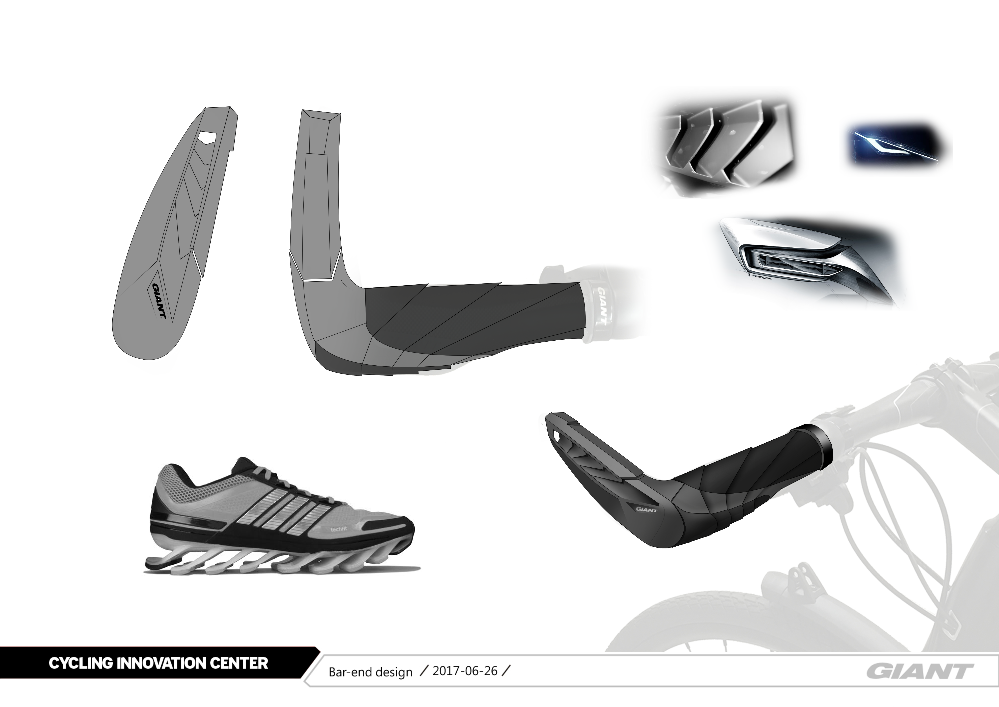
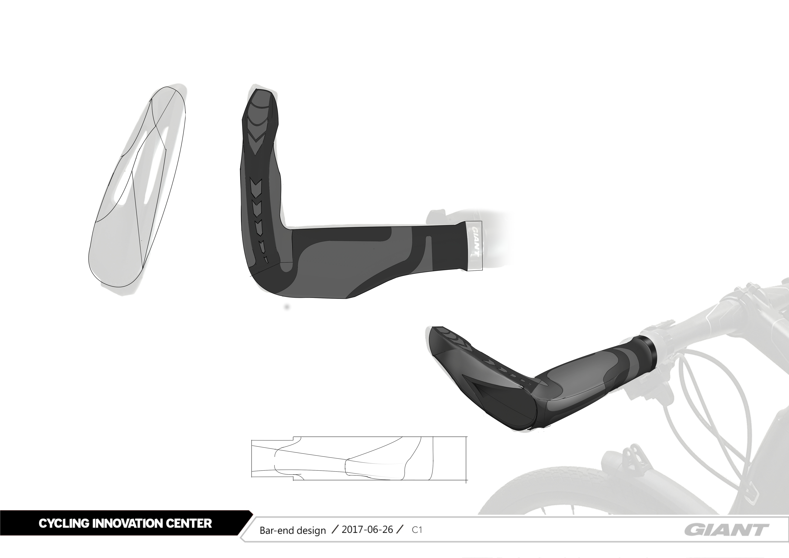
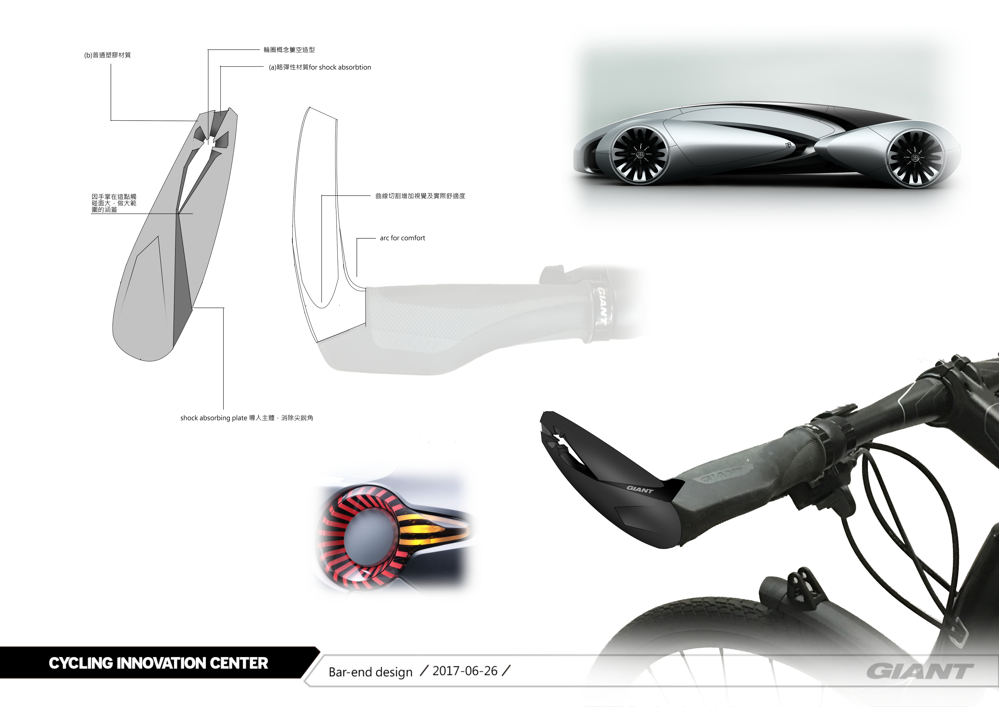
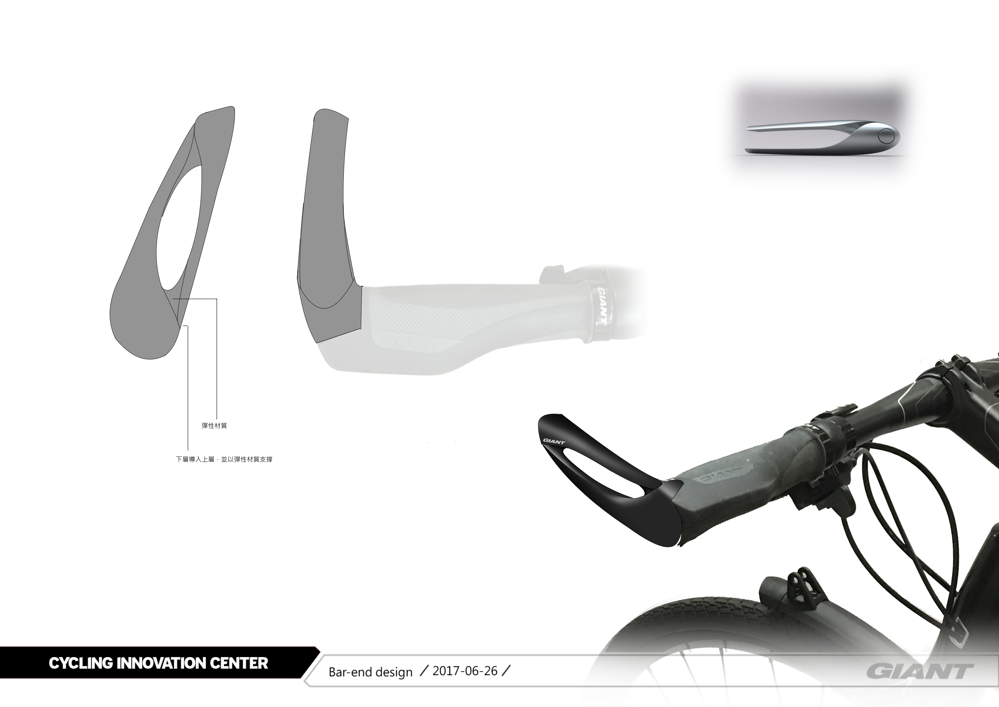
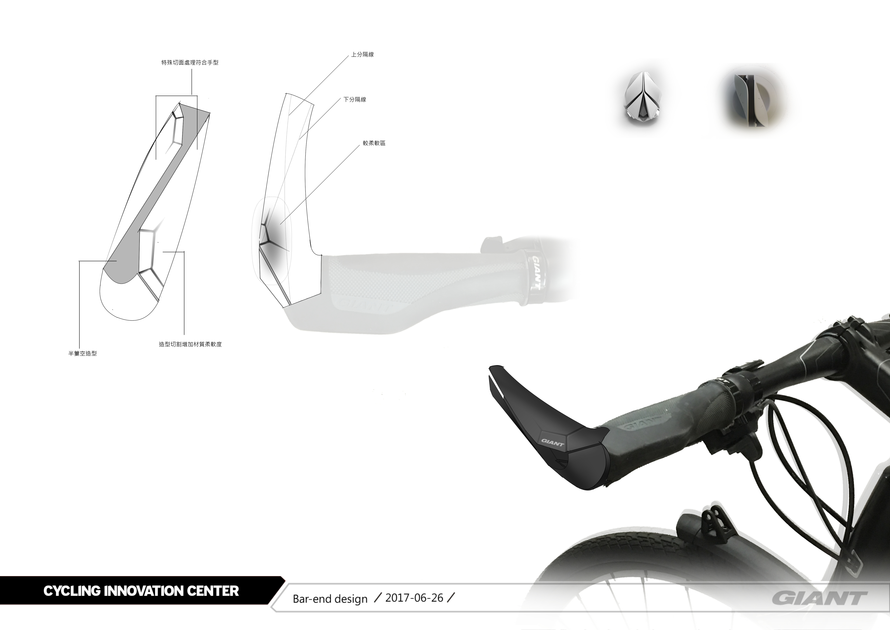

I worked for Giant Bicycles as an Industrial Design Intern in the summer of 2017, where I worked alongside the Cycling Innovation Department to ideate their next batch of 2018 Products. Specifically, I was given the role to design the newest ergonomic barend for their Ergo-Max Series.






As per my NDA contract, I cannot disclose too much details into the design, but here are some of the early stage sketches that I developed. By the end of my internship, my project was accepted and is currently in the production line ready to be launched in 2018.